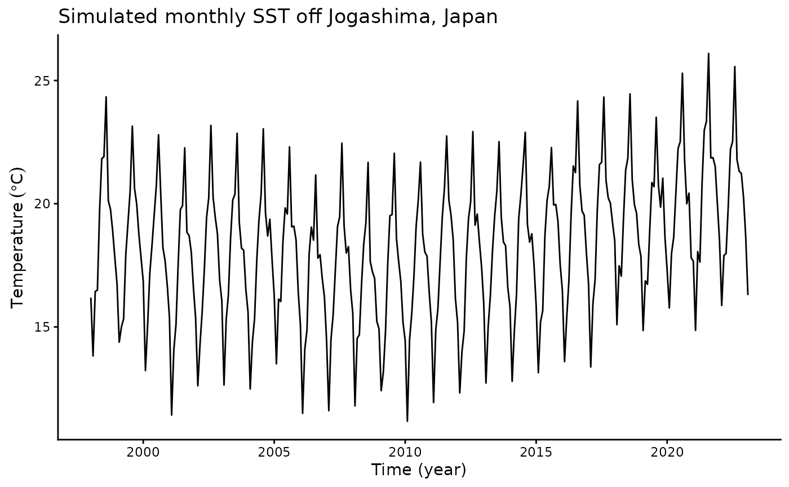
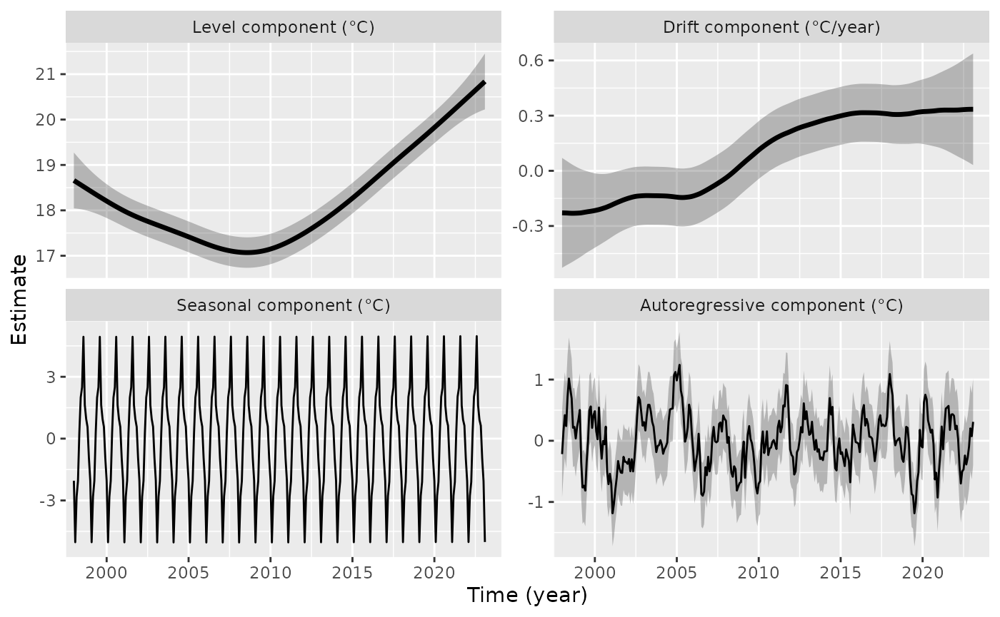

tempssm: State-space modeling for temperature time series in R
Version 0.3.0
Akira S. Hirao, Shinya Baba, and Momoko Ichinokawa
2026-07-28
Source:vignettes/getting-started-jogashima.Rmd
getting-started-jogashima.RmdSummary
tempssm is an R package for state-space modeling of
environmental temperature time series, including air and water
temperature observations. It provides a practical framework for
assessing how long-term trend, seasonal variation, autoregressive
dependence, and optional exogenous effects contribute to observed
temporal variation. The package facilitates the application of linear
Gaussian state-space models estimated by Kalman filtering and smoothing,
using the KFAS package as the computational backend
(Helske, 2017).
Key Features
- Designed for environmental temperature time series with arbitrary seasonal frequencies; currently validated primarily on monthly data
- Estimates latent states using linear Gaussian state-space models combined with Kalman filtering and smoothing
- Models temperature dynamics as a sum of interpretable latent components, including long-term trend, seasonal variation, autoregressive dependence, and optional exogenous effects
- Allows users to specify an arbitrary order of the autoregressive component (default: AR(1))
- Implements time-series cross-validation for model evaluation
Input Data Format
The core modeling functions in tempssm expect input time
series to be supplied as R ts objects. The ts
class is base R’s standard format for regularly spaced time series (see
the stats::ts documentation: https://search.r-project.org/R/refmans/stats/html/ts.html).
The package also provides utility functions for converting common
tabular and observational data formats into ts objects
before model fitting.
Prior Art and Scope
tempssm provides a domain-focused workflow for analyzing
temperature time series with linear Gaussian state-space models. It
brings together model construction, component extraction, uncertainty
summaries, residual diagnostics, visualization, and time-series
cross-validation in a single R package interface tailored to temperature
applications.
The package builds on established statistical methodology, including
linear Gaussian state-space modeling, Kalman filtering, and Kalman
smoothing. Model estimation is handled through the KFAS
package, which provides a general framework for state-space models in
R.
The initial implementation was adapted from the supplementary code provided by Baba (2024), accompanying Baba et al. (2024), which analyzed sea temperature trends using a linear Gaussian state-space model. The supplementary code is publicly available at:
https://github.com/logics-of-blue/sea-temperature-trend-jogashima
Compared with that prior implementation, tempssm extends
the workflow into a reusable R package interface with input validation,
documented S3 methods, tests, diagnostics, cross-validation utilities,
and examples for broader temperature time-series analysis.
The next section gives a brief model overview. A separate model specification vignette describes the mathematical formulation in more detail.
Model Overview
tempssm represents temperature variation with a linear
Gaussian state-space model composed of interpretable latent components:
a long-term trend, seasonal variation, autoregressive dependence, and
optional exogenous effects. The model is estimated with
KFAS, and tempssm() returns both filtering and
smoothing estimates. Unless otherwise stated, the summaries,
diagnostics, and plots in this vignette use smoothed state
estimates.
The full mathematical specification, including the observation equation, state decomposition, seasonal constraint, autoregressive component, exogenous component, parameter count, and estimation procedure, is described in the separate model specification document, available as a PDF in the package repository:
https://github.com/akihirao/tempssm/blob/main/vignettes/model-specification.pdf
Setup
Load tempssm before running the examples below.
The objective of this practice is to demonstrate the basic
application of a linear Gaussian state-space model to a univariate
temperature time series. This example introduces the basic workflow for
fitting a tempssm model, inspecting the summary output,
plotting latent components, checking residual diagnostics, and making
short-term predictions.
Example Dataset
A sample sea surface temperature (SST) dataset is included in the package.
- Dataset: Simulated monthly sea surface temperature (SST) off Jogashima, Miura City, Kanagawa Prefecture, Japan
-
Format: Univariate
tsobject - Frequency: 12 (monthly)
- Unit: Degrees Celsius
- Period: January 1998 to February 2023
This dataset is a simulated monthly SST time series based on the state-space model analysis of sea temperature off Jogashima reported by Baba et al. (2024). It is distributed with the supplementary materials and prototype code for the motivating study:
https://github.com/logics-of-blue/sea-temperature-trend-jogashima
## Jan Feb Mar Apr May Jun
## 1998 16.19 13.82 16.44 16.49 19.70 21.83
summary(sst_jogashima)## Temp
## Min. :11.17
## 1st Qu.:16.22
## Median :18.39
## Mean :18.23
## 3rd Qu.:20.11
## Max. :26.10This simulated dataset contains no missing observations. In general,
tempssm() can retain missing values in the response
temperature series and treat them as unobserved responses during Kalman
filtering and smoothing.
Plot the Time Series
We begin by visualizing the monthly SST time series to examine its overall structure, including apparent trends, seasonal variability, and whether missing observations are present.
plt_jogashima_sst <- forecast::autoplot(sst_jogashima) +
ggplot2::labs(
y = expression(Temperature ~ (degree * C)),
x = "Time (year)"
) +
ggplot2::ggtitle("Simulated monthly SST off Jogashima, Japan") +
ggplot2::theme_classic()
plot(plt_jogashima_sst)
The overall mean SST is approximately 18.2 °C, and a clear seasonal pattern is visible. The series contains no missing observations. SST appears to decline gradually from the beginning of the series to around 2010 and then increase thereafter. However, year-to-year variability is also evident, making it difficult to identify a clear long-term pattern from the raw time series alone.
Fit a State-Space Model
When a ts object containing temperature time-series data
(here, sst_jogashima) is passed to the core function
tempssm(), model construction and parameter estimation are
performed together. The returned S3 object of class tempssm
(here, res) stores the filtering and smoothing estimates,
as well as the constructed model and input data. By default,
tempssm() fits a first-order autoregressive model.
# model with first-order autoregressive component
res <- tempssm(sst_jogashima) # AR(1), the default model
summary(res)## tempssm summary
## -----------------
## Call:
## tempssm(temp_data = sst_jogashima)
##
## Model fit:
## Likelihood type: marginal
## Log-likelihood : -198.19
## k : 5
## Diffuse states : 13
## Converged : TRUE
##
## Variance parameters:
## Observation (H): 0.07496414
## State (Q trend): 4.937125e-06
## State (Q season): 0.0001763537
## State (Q ar): 0.1202156
##
## Components of auto-regression:
## Order of AR: 1
## Coefficient of AR1: 0.7579371First, confirm from the summary output that the model has converged
(Converged: TRUE). The summary also reports the
log-likelihood, parameter count (k), likelihood type, and
number of diffuse initial states. The estimated parameters include the
observation error variance (H) and the process error
variances for the long-term trend (Q trend), seasonal
component (Q season), and autoregressive component
(Q ar), as well as the autoregressive coefficient
(AR1 in the default model). See the detailed manual for
extracting and using these quantities directly; its location is listed
at the end of this quick tutorial.
Plot Model Components
We visualize the estimated long-term evolution of temperature levels and their rates of change (drift) by extracting the corresponding latent components from the state-space model. Additionally, seasonal variability and autoregressive dependence are plotted out, allowing the underlying trend behavior to be examined more clearly.
# plot all components at once
plot(res)
The level component suggests a long-term pattern that changes around 2008: the underlying SST level decreases during the first part of the series and then increases during the latter part. The drift component shows a corresponding pattern, with mostly negative values before around 2008 and positive values thereafter. The seasonal component captures the recurring annual cycle, while the autoregressive component represents shorter-term departures from the trend and seasonal pattern. The shaded gray areas represent 95% confidence intervals for the estimated latent states, illustrating the uncertainty associated with each estimated component. Because this is a simulated dataset, these component plots should be interpreted as an illustration of the model output rather than as direct estimates from the original observational record.
The standard plotting interface is plot(res). The
explicit helper plot_tempssm_components(res) produces the
same component plot and can be useful in scripts where a descriptive
function name is preferred. The ggplot2-style S3 interface
ggplot2::autoplot(res) is also available. These interfaces
return a faceted ggplot object, so selected components can
be stored and customized with standard ggplot2 layers, for example,
plot_tempssm_components(res, component = c("level", "drift")) + ggplot2::theme_bw().
Check Residual Diagnostics
The package provides diagnostic tools for checking whether the fitted model has left notable structure in the residuals. In particular, residual time-series plots, residual autocorrelation, residual distributions, and Ljung-Box tests can be used to assess remaining temporal dependence and departures from the Gaussian error assumption.
r <- get_tempssm_residuals(res)
lb_lag <- frequency(res$temp_data)
forecast::checkresiduals(r, lag = lb_lag, test = "LB")
##
## Ljung-Box test
##
## data: Residuals
## Q* = 9.6827, df = 12, p-value = 0.6438
##
## Model df: 0. Total lags used: 12Here, get_tempssm_residuals() explicitly extracts the
standardized recursive residuals from the fitted model.
forecast::checkresiduals() then displays the residual time
series, residual autocorrelation plot (ACF plot), and residual frequency
distribution, together with a Ljung-Box test. The lag is set to the
seasonal frequency of the input data; for monthly data, this uses lag
12. These plots and the test result should be checked for any notable
residual patterns. In this example, the Ljung-Box test indicated no
significant residual autocorrelation up to lag 12 (P > 0.05).
For tabular residual diagnostic summaries, see
diagnose_residuals() in the detailed manual.
For repeated checks across many fitted models, the convenience
wrapper plot_tempssm_residual_diagnostics(res) provides the
same type of residual diagnostic plot.
Extract Components
The long-term trend component and its rate of change (drift) can be extracted as ts objects as follows.
# Smoothing estimates
alpha_hat <- res$kfs$alphahat
head(alpha_hat)## level slope sea_dummy1 sea_dummy2 sea_dummy3 sea_dummy4
## Jan 1998 18.65840 -0.01905354 -2.0428374 -0.9196344 0.5642451 0.9553991
## Feb 1998 18.63934 -0.01906722 -5.0256252 -2.0428374 -0.9196344 0.5642451
## Mar 1998 18.62028 -0.01909100 -2.8244535 -5.0256252 -2.0428374 -0.9196344
## Apr 1998 18.60118 -0.01911004 -2.0508949 -2.8244535 -5.0256252 -2.0428374
## May 1998 18.58207 -0.01914416 0.2882283 -2.0508949 -2.8244535 -5.0256252
## Jun 1998 18.56293 -0.01918604 1.9925949 0.2882283 -2.0508949 -2.8244535
## sea_dummy5 sea_dummy6 sea_dummy7 sea_dummy8 sea_dummy9 sea_dummy10
## Jan 1998 1.6282639 4.9410126 2.4937014 1.9925949 0.2882283 -2.0508949
## Feb 1998 0.9553991 1.6282639 4.9410126 2.4937014 1.9925949 0.2882283
## Mar 1998 0.5642451 0.9553991 1.6282639 4.9410126 2.4937014 1.9925949
## Apr 1998 -0.9196344 0.5642451 0.9553991 1.6282639 4.9410126 2.4937014
## May 1998 -2.0428374 -0.9196344 0.5642451 0.9553991 1.6282639 4.9410126
## Jun 1998 -5.0256252 -2.0428374 -0.9196344 0.5642451 0.9553991 1.6282639
## sea_dummy11 arima1
## Jan 1998 -2.8244535 -0.2178663
## Feb 1998 -2.0508949 0.1519894
## Mar 1998 0.2882283 0.4187224
## Apr 1998 1.9925949 0.2408083
## May 1998 2.4937014 0.7185730
## Jun 1998 4.9410126 1.0167731
# Smoothing estimate of level component
level_ts <- get_level_ts(res)
# Smoothing estimate of drift component
drift_ts <- get_drift_ts(res)
# Average drift rate per year across the full period
mean_drift_year <- mean(drift_ts)
mean_drift_year## [1] 0.08777083Average annual increase in SST is approximately 0.09 °C.
Make Short-Term Predictions
A fitted tempssm object can also be passed to
predict() to obtain short-term predictions. By default,
predict(res) returns a one-step-ahead prediction beyond the
end of the observed series. This is useful for visual checks of how the
fitted model extrapolates the estimated level, seasonal, and
autoregressive components.
pred_1 <- predict(res)
pred_1## Mar
## 2023 18.33035Predictions for multiple future time points can be requested by
setting the n.ahead argument.
pred_12 <- predict(res, n.ahead = 12)
pred_12## Jan Feb Mar Apr May Jun Jul Aug
## 2023 18.33035 18.96985 21.33710 23.08522 23.51856 26.03694
## 2024 19.09319 16.16926
## Sep Oct Nov Dec
## 2023 22.69098 22.00902 21.74806 20.19190
## 2024These predictions should be interpreted as model-based extrapolations rather than definitive forecasts. Uncertainty generally increases as the prediction horizon becomes longer, and long-horizon predictions can be sensitive to model assumptions about trend, seasonality, and autoregressive dependence.
Further Reading
The examples above illustrate the basic univariate workflow for
fitting, diagnosing, visualizing, and making short-term predictions from
a tempssm model. The detailed manual extends this workflow
to exogenous variables, additional model diagnostics, and time-series
cross-validation:
https://github.com/akihirao/tempssm/blob/main/tools/manual/tempssm_manual.pdf